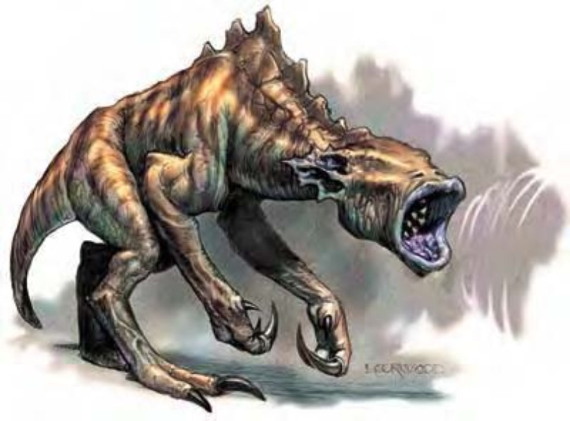

| 资料栏位 | 暗音盲怪 (Destrachan) 大型异怪 |
|---|---|
| 生命骰 | 8d8+24 (60HP) |
| 先攻 | +5 |
| 速度 | 30英尺 (6格) |
| 防御等级 | 18 (-1体型、+1敏捷、+8天生)、接触10、措手不及17 |
| 基本攻击/擒抱 | +6 / +14 |
| 攻击 | 爪抓+9近战 (1d6+4) |
| 全力攻击 | 2爪抓+9近战 (1d6+4) |
| 占据/触及 | 10英尺 / 5英尺 |
| 特殊攻击 | 毁灭和声 |
| 特殊能力 | 盲感100英尺、免疫、防护音波伤害 |
| 豁免 | 强韧+5、反射+5、意志+10 |
| 属性 | 力量18、敏捷12、体质16、智力12、感知18、魅力12 |
| 技能 | 躲藏+8、聆听+25、潜行+7、生存+9 |
| 专长 | 闪避、精通先攻、快速反射 |
| 环境 | 地底 |
| 组织 | 单独或一批 (3-5) |
| 挑战级数 | 8 |
| 宝藏 | 无 |
| 阵营 | 通常中立邪恶 |
| 进化 | 9-16HD (大型) ; 17-24HD (超大型) |
| 等级修正值 | ― |
该生物以带勾爪的粗腿蹒跚前行。外型似乎是爬虫类，巨大前倾的躯体前端是毫无特征的头部，被巨大耳部构造与张开的无牙嘴部占据。
住在地底的暗音盲怪看似怪异的非智慧兽类，但却异常邪恶、诡诈嗜虐。暗音盲怪有一对复杂、由三部分组成的耳朵，可针对各种声音调整其灵敏度。暗音盲怪看不见，但能以较大部分生物视力更为精准的听力进行猎杀。
暗音盲怪的管状嘴部可发出仔细聚焦的和声，产生的音波能量极强，足以震碎石壁。暗音盲怪擅于控制和声，甚至可选择被音波攻击所影响的物质种类。暗音盲怪散布死亡与悲苦。他们骚扰其他种族的地底聚居地，邪恶地造成灾难。他们可随意以音波炸开岩石，在地底来去自如。偶尔，暗音盲怪会把受害者架回巢穴，加以折磨监禁。没有活物愿意和暗音盲怪同盟。但有时某些不死生物与邪恶异界生物会和暗音盲怪一起攻击杀害其他生物。暗音盲怪从嘴部到尾巴末端约10英尺长，约4000磅重。暗音盲怪不会说话，但听得懂通用语。若不得不沟通，则以动作表示。
战斗暗音盲怪只在最后不得已或欲解决被其音波削弱的对手时，才使用爪抓攻击。他们通常尽可能地伏击敌人。暗音盲怪会先致力摧毁金属防具与武器，然后调整和声对付血肉。
毁灭和声（超自然）：暗音盲怪可发射80英尺锥状的音波能量。也可使用本能力对付半径30英尺内的生物或物品。其和声能力可调整以影响不同种类的目标。然后调整和声对付血肉。豁免DC的调整值与魅力调整值相同。
盲感（特异）：与生物视觉一样，暗音盲怪可用听觉感知100英尺内所有敌人位置。
免疫：暗音盲怪对凝视攻击、视觉效应、幻术或其他仰赖视觉的攻击形式免疫。
防护音波伤害（特异）：暗音盲怪受噪音与音波法术（例如“幻音术”、“沉默术”）影响，但由于可保护耳朵，他们较不易受音波攻击伤害（豁免检定时具有+4环境加值）。听力受损的暗音盲怪陷入目盲，所有目标视为拥有完全隐蔽。
技能：暗音盲怪在进行“聆听”检定时具有+4种族加值。